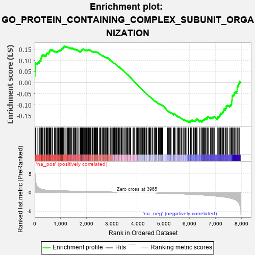
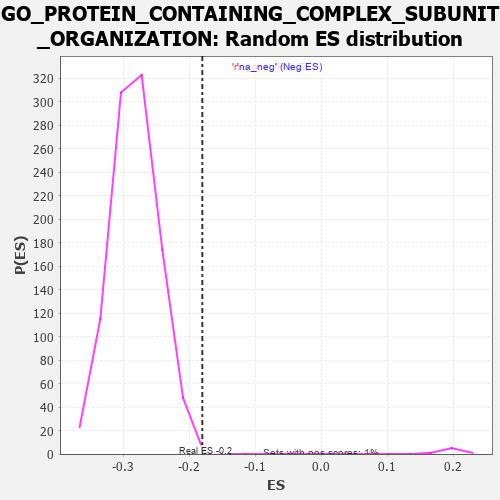

| | | Dataset | 7d |
| Phenotype | NoPhenotypeAvailable |
| Upregulated in class | na_neg |
| GeneSet | GO_PROTEIN_CONTAINING_COMPLEX_SUBUNIT_ORGANIZATION |
| Enrichment Score (ES) | -0.18040736 |
| Normalized Enrichment Score (NES) | -0.6383533 |
| Nominal p-value | 0.998993 |
| FDR q-value | 1.0 |
| FWER p-Value | 1.0 |
Table: GSEA Results Summary

Fig 1: Enrichment plot: GO_PROTEIN_CONTAINING_COMPLEX_SUBUNIT_ORGANIZATION
Profile of the Running ES Score & Positions of GeneSet Members on the Rank Ordered List
| PROBE | GENE SYMBOL | GENE_TITLE | RANK IN GENE LIST | RANK METRIC SCORE | RUNNING ES | CORE ENRICHMENT | | 1 | EIF3J | | | 1 | 7.125 | 0.0319 | No |
| 2 | H2BE1 | | | 16 | 4.938 | 0.0523 | No |
| 3 | H2AX | | | 20 | 4.738 | 0.0732 | No |
| 4 | ABCA5 | | | 29 | 3.799 | 0.0892 | No |
| 5 | UBE2K | | | 94 | 1.739 | 0.0885 | No |
| 6 | ADCY8 | | | 124 | 1.418 | 0.0911 | No |
| 7 | AXIN1 | | | 166 | 1.159 | 0.0908 | No |
| 8 | DGAT1 | | | 171 | 1.146 | 0.0954 | No |
| 9 | TPPP3 | | | 195 | 1.079 | 0.0972 | No |
| 10 | SWI5 | | | 203 | 1.045 | 0.1010 | No |
| 11 | CDC45 | | | 239 | 0.950 | 0.1006 | No |
| 12 | SRSF9 | | | 240 | 0.950 | 0.1049 | No |
| 13 | NSF | | | 243 | 0.947 | 0.1089 | No |
| 14 | INSM1 | | | 250 | 0.939 | 0.1123 | No |
| 15 | COX18 | | | 264 | 0.890 | 0.1146 | No |
| 16 | TBX20 | | | 267 | 0.880 | 0.1183 | No |
| 17 | ULK1 | | | 272 | 0.875 | 0.1217 | No |
| 18 | FSCN1 | | | 297 | 0.830 | 0.1222 | No |
| 19 | CCNH | | | 301 | 0.817 | 0.1255 | No |
| 20 | BOP1 | | | 330 | 0.768 | 0.1253 | No |
| 21 | AXIN2 | | | 383 | 0.713 | 0.1216 | No |
| 22 | BAX | | | 387 | 0.711 | 0.1244 | No |
| 23 | RRN3 | | | 438 | 0.667 | 0.1207 | No |
| 24 | CENPS | | | 439 | 0.666 | 0.1237 | No |
| 25 | NUBPL | | | 442 | 0.665 | 0.1264 | No |
| 26 | ERCC1 | | | 453 | 0.660 | 0.1281 | No |
| 27 | HAT1 | | | 454 | 0.659 | 0.1310 | No |
| 28 | LEO1 | | | 463 | 0.655 | 0.1329 | No |
| 29 | ORC3 | | | 479 | 0.644 | 0.1338 | No |
| 30 | NUP54 | | | 505 | 0.627 | 0.1333 | No |
| 31 | PSMG1 | | | 538 | 0.615 | 0.1318 | No |
| 32 | MCM2 | | | 546 | 0.614 | 0.1337 | No |
| 33 | JMJD6 | | | 553 | 0.613 | 0.1356 | No |
| 34 | COA4 | | | 561 | 0.609 | 0.1374 | No |
| 35 | NLE1 | | | 565 | 0.609 | 0.1398 | No |
| 36 | HIRA | | | 568 | 0.608 | 0.1423 | No |
| 37 | MX1 | | | 578 | 0.604 | 0.1438 | No |
| 38 | CCNB1 | | | 581 | 0.601 | 0.1462 | No |
| 39 | DHX33 | | | 605 | 0.593 | 0.1458 | No |
| 40 | MCM7 | | | 612 | 0.591 | 0.1477 | No |
| 41 | KCND2 | | | 617 | 0.590 | 0.1498 | No |
| 42 | HES5 | | | 661 | 0.571 | 0.1467 | No |
| 43 | CDK7 | | | 686 | 0.564 | 0.1460 | No |
| 44 | ATP23 | | | 691 | 0.562 | 0.1480 | No |
| 45 | UGDH | | | 764 | 0.540 | 0.1409 | No |
| 46 | CPSF6 | | | 778 | 0.538 | 0.1416 | No |
| 47 | BLM | | | 804 | 0.531 | 0.1406 | No |
| 48 | RPA1 | | | 817 | 0.527 | 0.1414 | No |
| 49 | RPA2 | | | 851 | 0.519 | 0.1394 | No |
| 50 | ASF1B | | | 863 | 0.515 | 0.1402 | No |
| 51 | POGZ | | | 887 | 0.509 | 0.1394 | No |
| 52 | HMGB2 | | | 892 | 0.507 | 0.1412 | No |
| 53 | HCFC1 | | | 902 | 0.506 | 0.1423 | No |
| 54 | PRPF3 | | | 917 | 0.503 | 0.1427 | No |
| 55 | SF3A2 | | | 928 | 0.500 | 0.1436 | No |
| 56 | STX17 | | | 940 | 0.497 | 0.1444 | No |
| 57 | ADRM1 | | | 948 | 0.496 | 0.1457 | No |
| 58 | DVL3 | | | 971 | 0.490 | 0.1450 | No |
| 59 | COX10 | | | 990 | 0.485 | 0.1447 | No |
| 60 | EIF3F | | | 995 | 0.485 | 0.1464 | No |
| 61 | MEN1 | | | 1003 | 0.483 | 0.1476 | No |
| 62 | PSMG2 | | | 1018 | 0.480 | 0.1479 | No |
| 63 | PWP2 | | | 1030 | 0.477 | 0.1486 | No |
| 64 | ISY1 | | | 1036 | 0.476 | 0.1501 | No |
| 65 | YAP1 | | | 1041 | 0.475 | 0.1517 | No |
| 66 | TAF9 | | | 1046 | 0.475 | 0.1533 | No |
| 67 | XPA | | | 1070 | 0.469 | 0.1524 | No |
| 68 | AIFM1 | | | 1072 | 0.469 | 0.1543 | No |
| 69 | PTCD3 | | | 1082 | 0.467 | 0.1552 | No |
| 70 | DENR | | | 1084 | 0.467 | 0.1572 | No |
| 71 | RAD51 | | | 1090 | 0.466 | 0.1586 | No |
| 72 | COA6 | | | 1126 | 0.459 | 0.1561 | No |
| 73 | NUP93 | | | 1127 | 0.459 | 0.1581 | No |
| 74 | SRC | | | 1128 | 0.459 | 0.1602 | No |
| 75 | KMT2A | | | 1130 | 0.458 | 0.1621 | No |
| 76 | NCK2 | | | 1131 | 0.458 | 0.1642 | No |
| 77 | MCM3 | | | 1142 | 0.456 | 0.1649 | No |
| 78 | ERCC3 | | | 1173 | 0.451 | 0.1629 | No |
| 79 | CLP1 | | | 1182 | 0.450 | 0.1639 | No |
| 80 | KCTD6 | | | 1213 | 0.444 | 0.1619 | No |
| 81 | RBBP7 | | | 1220 | 0.443 | 0.1631 | No |
| 82 | CDC73 | | | 1265 | 0.436 | 0.1592 | No |
| 83 | EIF3D | | | 1276 | 0.435 | 0.1598 | No |
| 84 | TEAD1 | | | 1298 | 0.428 | 0.1590 | No |
| 85 | PEX5 | | | 1313 | 0.427 | 0.1590 | No |
| 86 | TBCD | | | 1338 | 0.422 | 0.1577 | No |
| 87 | SF3A1 | | | 1346 | 0.420 | 0.1587 | No |
| 88 | FKBP4 | | | 1390 | 0.412 | 0.1548 | No |
| 89 | SSBP3 | | | 1396 | 0.411 | 0.1560 | No |
| 90 | LSM4 | | | 1426 | 0.405 | 0.1540 | No |
| 91 | CHMP7 | | | 1435 | 0.403 | 0.1547 | No |
| 92 | RBX1 | | | 1445 | 0.401 | 0.1554 | No |
| 93 | GRWD1 | | | 1449 | 0.401 | 0.1568 | No |
| 94 | DDX28 | | | 1498 | 0.390 | 0.1521 | No |
| 95 | MCM6 | | | 1506 | 0.389 | 0.1530 | No |
| 96 | SCO1 | | | 1536 | 0.385 | 0.1508 | No |
| 97 | UQCC1 | | | 1542 | 0.384 | 0.1519 | No |
| 98 | FZD1 | | | 1574 | 0.379 | 0.1495 | No |
| 99 | PAF1 | | | 1588 | 0.376 | 0.1495 | No |
| 100 | CUTC | | | 1593 | 0.375 | 0.1506 | No |
| 101 | DRG1 | | | 1633 | 0.368 | 0.1471 | No |
| 102 | DDB1 | | | 1642 | 0.366 | 0.1477 | No |
| 103 | TPPP | | | 1646 | 0.365 | 0.1489 | No |
| 104 | TPX2 | | | 1708 | 0.355 | 0.1424 | No |
| 105 | ERCC2 | | | 1712 | 0.354 | 0.1436 | No |
| 106 | GPAA1 | | | 1757 | 0.344 | 0.1393 | No |
| 107 | SNX14 | | | 1764 | 0.343 | 0.1400 | No |
| 108 | AGO2 | | | 1767 | 0.343 | 0.1413 | No |
| 109 | TLE4 | | | 1775 | 0.341 | 0.1419 | No |
| 110 | STRAP | | | 1793 | 0.339 | 0.1412 | No |
| 111 | FNIP1 | | | 1798 | 0.338 | 0.1422 | No |
| 112 | COX19 | | | 1807 | 0.336 | 0.1426 | No |
| 113 | PSMD4 | | | 1811 | 0.335 | 0.1437 | No |
| 114 | RPF2 | | | 1814 | 0.335 | 0.1450 | No |
| 115 | ERAL1 | | | 1823 | 0.333 | 0.1454 | No |
| 116 | TBCC | | | 1826 | 0.333 | 0.1466 | No |
| 117 | LSM2 | | | 1829 | 0.332 | 0.1479 | No |
| 118 | UVRAG | | | 1831 | 0.332 | 0.1492 | No |
| 119 | AP2S1 | | | 1846 | 0.329 | 0.1488 | No |
| 120 | TCF7 | | | 1848 | 0.328 | 0.1502 | No |
| 121 | SMAD4 | | | 1860 | 0.326 | 0.1502 | No |
| 122 | TLE3 | | | 1863 | 0.325 | 0.1514 | No |
| 123 | RBBP5 | | | 1875 | 0.323 | 0.1514 | No |
| 124 | PAK3 | | | 1889 | 0.322 | 0.1511 | No |
| 125 | CUL3 | | | 1893 | 0.321 | 0.1521 | No |
| 126 | EIF3B | | | 1926 | 0.317 | 0.1493 | No |
| 127 | MICU1 | | | 1954 | 0.313 | 0.1471 | No |
| 128 | ZW10 | | | 1973 | 0.309 | 0.1461 | No |
| 129 | MCFD2 | | | 1975 | 0.309 | 0.1474 | No |
| 130 | GPX4 | | | 1989 | 0.306 | 0.1470 | No |
| 131 | EIF3L | | | 2005 | 0.304 | 0.1464 | No |
| 132 | RAF1 | | | 2011 | 0.303 | 0.1471 | No |
| 133 | DMAP1 | | | 2025 | 0.301 | 0.1467 | No |
| 134 | JMJD4 | | | 2029 | 0.301 | 0.1477 | No |
| 135 | GOSR2 | | | 2050 | 0.298 | 0.1464 | No |
| 136 | LUC7L | | | 2060 | 0.297 | 0.1465 | No |
| 137 | SF3B1 | | | 2071 | 0.295 | 0.1465 | No |
| 138 | KCNC2 | | | 2075 | 0.295 | 0.1475 | No |
| 139 | SART3 | | | 2084 | 0.293 | 0.1477 | No |
| 140 | CENPE | | | 2086 | 0.293 | 0.1489 | No |
| 141 | TAF7 | | | 2092 | 0.292 | 0.1495 | No |
| 142 | INO80 | | | 2120 | 0.288 | 0.1472 | No |
| 143 | PSME4 | | | 2143 | 0.285 | 0.1456 | No |
| 144 | EIF3G | | | 2155 | 0.284 | 0.1454 | No |
| 145 | CNIH1 | | | 2159 | 0.283 | 0.1463 | No |
| 146 | SYK | | | 2186 | 0.278 | 0.1441 | No |
| 147 | BAZ2A | | | 2227 | 0.272 | 0.1400 | No |
| 148 | COX15 | | | 2238 | 0.270 | 0.1399 | No |
| 149 | CREB1 | | | 2243 | 0.269 | 0.1406 | No |
| 150 | SRSF1 | | | 2252 | 0.267 | 0.1407 | No |
| 151 | GNMT | | | 2261 | 0.266 | 0.1408 | No |
| 152 | AAR2 | | | 2291 | 0.261 | 0.1382 | No |
| 153 | WASF1 | | | 2303 | 0.259 | 0.1379 | No |
| 154 | EIF3K | | | 2314 | 0.258 | 0.1377 | No |
| 155 | MED25 | | | 2320 | 0.257 | 0.1382 | No |
| 156 | SEC13 | | | 2330 | 0.256 | 0.1381 | No |
| 157 | ANO6 | | | 2339 | 0.255 | 0.1382 | No |
| 158 | FAF1 | | | 2340 | 0.255 | 0.1394 | No |
| 159 | OXA1L | | | 2355 | 0.252 | 0.1387 | No |
| 160 | MIF | | | 2357 | 0.252 | 0.1397 | No |
| 161 | PPID | | | 2376 | 0.249 | 0.1384 | No |
| 162 | SLU7 | | | 2382 | 0.248 | 0.1388 | No |
| 163 | TAF1B | | | 2404 | 0.245 | 0.1371 | No |
| 164 | OMA1 | | | 2408 | 0.244 | 0.1378 | No |
| 165 | MET | | | 2430 | 0.240 | 0.1361 | No |
| 166 | LYRM7 | | | 2434 | 0.239 | 0.1368 | No |
| 167 | KAT6A | | | 2444 | 0.237 | 0.1367 | No |
| 168 | CDT1 | | | 2505 | 0.226 | 0.1297 | No |
| 169 | SPG7 | | | 2525 | 0.223 | 0.1282 | No |
| 170 | SRP54 | | | 2544 | 0.220 | 0.1268 | No |
| 171 | EIF3H | | | 2558 | 0.219 | 0.1261 | No |
| 172 | PSMD5 | | | 2560 | 0.218 | 0.1269 | No |
| 173 | MPP7 | | | 2606 | 0.211 | 0.1219 | No |
| 174 | EIF3E | | | 2634 | 0.207 | 0.1192 | No |
| 175 | KAT5 | | | 2644 | 0.206 | 0.1190 | No |
| 176 | NOP2 | | | 2648 | 0.206 | 0.1195 | No |
| 177 | VPS4A | | | 2654 | 0.205 | 0.1197 | No |
| 178 | MITF | | | 2659 | 0.205 | 0.1201 | No |
| 179 | ARID2 | | | 2664 | 0.204 | 0.1205 | No |
| 180 | TAF12 | | | 2686 | 0.201 | 0.1186 | No |
| 181 | DDX1 | | | 2718 | 0.196 | 0.1154 | No |
| 182 | SLIT2 | | | 2724 | 0.195 | 0.1156 | No |
| 183 | CUL1 | | | 2735 | 0.193 | 0.1151 | No |
| 184 | LMAN1 | | | 2743 | 0.192 | 0.1151 | No |
| 185 | SCFD1 | | | 2783 | 0.185 | 0.1107 | No |
| 186 | PPIH | | | 2790 | 0.184 | 0.1108 | No |
| 187 | ATR | | | 2800 | 0.183 | 0.1104 | No |
| 188 | FER | | | 2803 | 0.183 | 0.1110 | No |
| 189 | BRK1 | | | 2805 | 0.183 | 0.1116 | No |
| 190 | EIF3I | | | 2806 | 0.183 | 0.1125 | No |
| 191 | SRP19 | | | 2817 | 0.181 | 0.1119 | No |
| 192 | KAT6B | | | 2821 | 0.180 | 0.1124 | No |
| 193 | EIF3C | | | 2832 | 0.179 | 0.1118 | No |
| 194 | CAND1 | | | 2845 | 0.177 | 0.1110 | No |
| 195 | RBM5 | | | 2910 | 0.164 | 0.1033 | No |
| 196 | TAZ | | | 2933 | 0.161 | 0.1011 | No |
| 197 | UBE2S | | | 2980 | 0.153 | 0.0956 | No |
| 198 | COX17 | | | 3019 | 0.147 | 0.0913 | No |
| 199 | BRDT | | | 3028 | 0.145 | 0.0908 | No |
| 200 | TLN1 | | | 3030 | 0.145 | 0.0914 | No |
| 201 | LEF1 | | | 3037 | 0.144 | 0.0912 | No |
| 202 | ABCE1 | | | 3051 | 0.143 | 0.0901 | No |
| 203 | MAP2 | | | 3074 | 0.140 | 0.0878 | No |
| 204 | HDAC1 | | | 3086 | 0.138 | 0.0870 | No |
| 205 | CHP1 | | | 3089 | 0.138 | 0.0874 | No |
| 206 | CUL4A | | | 3097 | 0.137 | 0.0870 | No |
| 207 | EIF3M | | | 3133 | 0.133 | 0.0830 | No |
| 208 | TAF11 | | | 3147 | 0.130 | 0.0818 | No |
| 209 | GCH1 | | | 3166 | 0.127 | 0.0800 | No |
| 210 | PSMD9 | | | 3179 | 0.125 | 0.0790 | No |
| 211 | TWF1 | | | 3199 | 0.123 | 0.0770 | No |
| 212 | FCHO2 | | | 3238 | 0.115 | 0.0725 | No |
| 213 | ELOB | | | 3241 | 0.114 | 0.0727 | No |
| 214 | TFG | | | 3243 | 0.114 | 0.0731 | No |
| 215 | NUP98 | | | 3261 | 0.112 | 0.0714 | No |
| 216 | KCTD3 | | | 3291 | 0.107 | 0.0680 | No |
| 217 | SMAD3 | | | 3303 | 0.105 | 0.0670 | No |
| 218 | SMAD1 | | | 3337 | 0.099 | 0.0631 | No |
| 219 | NCLN | | | 3353 | 0.096 | 0.0615 | No |
| 220 | FMN1 | | | 3363 | 0.095 | 0.0607 | No |
| 221 | EPG5 | | | 3368 | 0.094 | 0.0606 | No |
| 222 | VPS16 | | | 3370 | 0.093 | 0.0609 | No |
| 223 | GMFB | | | 3381 | 0.091 | 0.0600 | No |
| 224 | DDX3X | | | 3388 | 0.091 | 0.0596 | No |
| 225 | KCTD7 | | | 3417 | 0.088 | 0.0563 | No |
| 226 | TGS1 | | | 3456 | 0.084 | 0.0516 | No |
| 227 | TBP | | | 3493 | 0.078 | 0.0472 | No |
| 228 | FES | | | 3501 | 0.077 | 0.0466 | No |
| 229 | XPC | | | 3509 | 0.076 | 0.0460 | No |
| 230 | TTC19 | | | 3555 | 0.066 | 0.0403 | No |
| 231 | SURF1 | | | 3558 | 0.066 | 0.0403 | No |
| 232 | LCMT1 | | | 3576 | 0.063 | 0.0384 | No |
| 233 | PARD3 | | | 3584 | 0.063 | 0.0377 | No |
| 234 | MAPK3 | | | 3589 | 0.062 | 0.0375 | No |
| 235 | COG4 | | | 3608 | 0.058 | 0.0353 | No |
| 236 | RIC3 | | | 3629 | 0.055 | 0.0329 | No |
| 237 | SKP1 | | | 3663 | 0.049 | 0.0288 | No |
| 238 | DHX9 | | | 3693 | 0.044 | 0.0251 | No |
| 239 | VTA1 | | | 3697 | 0.043 | 0.0249 | No |
| 240 | HSF1 | | | 3718 | 0.039 | 0.0224 | No |
| 241 | DAXX | | | 3722 | 0.038 | 0.0222 | No |
| 242 | SPAST | | | 3801 | 0.027 | 0.0120 | No |
| 243 | BET1 | | | 3817 | 0.025 | 0.0101 | No |
| 244 | CHD1L | | | 3819 | 0.024 | 0.0101 | No |
| 245 | DGKQ | | | 3856 | 0.020 | 0.0054 | No |
| 246 | NRG3 | | | 3925 | 0.005 | -0.0037 | No |
| 247 | VPS72 | | | 3948 | 0.003 | -0.0066 | No |
| 248 | PPM1A | | | 3953 | 0.002 | -0.0071 | No |
| 249 | IGF1R | | | 3970 | -0.002 | -0.0092 | No |
| 250 | SF3A3 | | | 3976 | -0.003 | -0.0099 | No |
| 251 | CHMP6 | | | 3977 | -0.003 | -0.0098 | No |
| 252 | VPS35 | | | 3989 | -0.006 | -0.0113 | No |
| 253 | ECSIT | | | 4002 | -0.008 | -0.0128 | No |
| 254 | PARP1 | | | 4014 | -0.010 | -0.0142 | No |
| 255 | TAL1 | | | 4064 | -0.018 | -0.0207 | No |
| 256 | DDX20 | | | 4083 | -0.021 | -0.0230 | No |
| 257 | TRAF1 | | | 4104 | -0.024 | -0.0255 | No |
| 258 | MTOR | | | 4114 | -0.025 | -0.0266 | No |
| 259 | ABL1 | | | 4125 | -0.027 | -0.0278 | No |
| 260 | MZT1 | | | 4145 | -0.032 | -0.0302 | No |
| 261 | SYNJ1 | | | 4173 | -0.038 | -0.0336 | No |
| 262 | AP2B1 | | | 4185 | -0.039 | -0.0349 | No |
| 263 | TBCA | | | 4194 | -0.041 | -0.0358 | No |
| 264 | VPS11 | | | 4202 | -0.041 | -0.0365 | No |
| 265 | TAF7L | | | 4205 | -0.042 | -0.0366 | No |
| 266 | ARPC2 | | | 4232 | -0.047 | -0.0398 | No |
| 267 | TBCEL | | | 4241 | -0.049 | -0.0407 | No |
| 268 | GAK | | | 4249 | -0.050 | -0.0414 | No |
| 269 | ARL2 | | | 4254 | -0.050 | -0.0417 | No |
| 270 | RRS1 | | | 4256 | -0.051 | -0.0416 | No |
| 271 | RSF1 | | | 4267 | -0.053 | -0.0427 | No |
| 272 | SAR1A | | | 4304 | -0.060 | -0.0472 | No |
| 273 | BAG4 | | | 4314 | -0.061 | -0.0481 | No |
| 274 | OPA1 | | | 4330 | -0.065 | -0.0498 | No |
| 275 | ADRB2 | | | 4352 | -0.068 | -0.0523 | No |
| 276 | STX5 | | | 4400 | -0.077 | -0.0582 | No |
| 277 | EIF2D | | | 4423 | -0.081 | -0.0608 | No |
| 278 | COA3 | | | 4435 | -0.083 | -0.0619 | No |
| 279 | SETD2 | | | 4443 | -0.084 | -0.0624 | No |
| 280 | LAMC1 | | | 4445 | -0.084 | -0.0622 | No |
| 281 | SPAG1 | | | 4453 | -0.085 | -0.0627 | No |
| 282 | LRRK2 | | | 4467 | -0.087 | -0.0640 | No |
| 283 | EPS8 | | | 4474 | -0.088 | -0.0644 | No |
| 284 | HIP1 | | | 4485 | -0.092 | -0.0654 | No |
| 285 | ACAD9 | | | 4507 | -0.096 | -0.0677 | No |
| 286 | ABI2 | | | 4554 | -0.106 | -0.0734 | No |
| 287 | APC | | | 4558 | -0.107 | -0.0733 | No |
| 288 | DLG5 | | | 4619 | -0.121 | -0.0807 | No |
| 289 | LETM1 | | | 4644 | -0.127 | -0.0833 | No |
| 290 | TAF10 | | | 4652 | -0.128 | -0.0837 | No |
| 291 | DDX23 | | | 4658 | -0.129 | -0.0838 | No |
| 292 | ARPC3 | | | 4659 | -0.129 | -0.0832 | No |
| 293 | CHMP3 | | | 4660 | -0.129 | -0.0826 | No |
| 294 | CRBN | | | 4695 | -0.138 | -0.0865 | No |
| 295 | KLC1 | | | 4697 | -0.139 | -0.0860 | No |
| 296 | ARF6 | | | 4704 | -0.140 | -0.0862 | No |
| 297 | RAP1B | | | 4706 | -0.140 | -0.0857 | No |
| 298 | WASF3 | | | 4730 | -0.145 | -0.0881 | No |
| 299 | RTN4 | | | 4783 | -0.154 | -0.0943 | No |
| 300 | SRPK2 | | | 4790 | -0.155 | -0.0944 | No |
| 301 | FLII | | | 4795 | -0.156 | -0.0942 | No |
| 302 | TPPP2 | | | 4800 | -0.157 | -0.0940 | No |
| 303 | TERT | | | 4801 | -0.157 | -0.0933 | No |
| 304 | WDR1 | | | 4824 | -0.163 | -0.0955 | No |
| 305 | EIF3A | | | 4842 | -0.167 | -0.0970 | No |
| 306 | USO1 | | | 4855 | -0.168 | -0.0979 | No |
| 307 | DLG1 | | | 4860 | -0.169 | -0.0976 | No |
| 308 | TBCE | | | 4862 | -0.170 | -0.0970 | No |
| 309 | CLU | | | 4889 | -0.174 | -0.0997 | No |
| 310 | VAMP8 | | | 4905 | -0.179 | -0.1009 | No |
| 311 | CAPZB | | | 4908 | -0.179 | -0.1003 | No |
| 312 | ATRX | | | 4929 | -0.184 | -0.1022 | No |
| 313 | EP300 | | | 4941 | -0.186 | -0.1028 | No |
| 314 | XRCC5 | | | 4946 | -0.187 | -0.1025 | No |
| 315 | CHMP5 | | | 4952 | -0.188 | -0.1023 | No |
| 316 | PRKDC | | | 4955 | -0.189 | -0.1017 | No |
| 317 | KCTD5 | | | 5141 | -0.235 | -0.1252 | No |
| 318 | HDAC6 | | | 5183 | -0.244 | -0.1296 | No |
| 319 | ATM | | | 5210 | -0.249 | -0.1319 | No |
| 320 | ATL2 | | | 5214 | -0.249 | -0.1312 | No |
| 321 | SSH1 | | | 5254 | -0.258 | -0.1352 | No |
| 322 | CDK1 | | | 5264 | -0.262 | -0.1352 | No |
| 323 | PICK1 | | | 5265 | -0.263 | -0.1340 | No |
| 324 | CELF4 | | | 5275 | -0.266 | -0.1340 | No |
| 325 | ERCC5 | | | 5284 | -0.268 | -0.1339 | No |
| 326 | MPP2 | | | 5367 | -0.288 | -0.1435 | No |
| 327 | GRIN1 | | | 5381 | -0.291 | -0.1439 | No |
| 328 | FZD5 | | | 5386 | -0.292 | -0.1431 | No |
| 329 | DLG4 | | | 5388 | -0.293 | -0.1420 | No |
| 330 | KIF19 | | | 5392 | -0.294 | -0.1410 | No |
| 331 | LATS1 | | | 5412 | -0.298 | -0.1422 | No |
| 332 | KCNC4 | | | 5414 | -0.298 | -0.1410 | No |
| 333 | IST1 | | | 5442 | -0.305 | -0.1432 | No |
| 334 | KIF2A | | | 5511 | -0.322 | -0.1508 | No |
| 335 | TRIM9 | | | 5526 | -0.327 | -0.1512 | No |
| 336 | EHD1 | | | 5560 | -0.336 | -0.1541 | No |
| 337 | NDE1 | | | 5578 | -0.339 | -0.1548 | No |
| 338 | TTC17 | | | 5589 | -0.341 | -0.1546 | No |
| 339 | CLYBL | | | 5619 | -0.350 | -0.1569 | No |
| 340 | SOAT1 | | | 5657 | -0.363 | -0.1602 | No |
| 341 | CASP8 | | | 5678 | -0.369 | -0.1612 | No |
| 342 | TTBK2 | | | 5700 | -0.376 | -0.1623 | No |
| 343 | MX2 | | | 5745 | -0.390 | -0.1664 | No |
| 344 | VAMP7 | | | 5777 | -0.399 | -0.1687 | No |
| 345 | ABCG1 | | | 5778 | -0.399 | -0.1669 | No |
| 346 | BBS4 | | | 5806 | -0.407 | -0.1686 | No |
| 347 | CELF5 | | | 5830 | -0.414 | -0.1698 | No |
| 348 | ARL6 | | | 5847 | -0.417 | -0.1701 | No |
| 349 | ARPC4 | | | 5886 | -0.430 | -0.1732 | No |
| 350 | SET | | | 5895 | -0.434 | -0.1723 | No |
| 351 | DCTN1 | | | 5950 | -0.454 | -0.1774 | No |
| 352 | ACTN2 | | | 5960 | -0.458 | -0.1766 | No |
| 353 | CENPJ | | | 5968 | -0.460 | -0.1754 | No |
| 354 | TTBK1 | | | 5969 | -0.460 | -0.1734 | No |
| 355 | JMY | | | 6023 | -0.479 | -0.1783 | Yes |
| 356 | CKAP5 | | | 6032 | -0.482 | -0.1771 | Yes |
| 357 | RAC1 | | | 6036 | -0.484 | -0.1754 | Yes |
| 358 | VAMP3 | | | 6043 | -0.487 | -0.1740 | Yes |
| 359 | ADD2 | | | 6046 | -0.487 | -0.1721 | Yes |
| 360 | EVL | | | 6052 | -0.490 | -0.1705 | Yes |
| 361 | CALR | | | 6077 | -0.499 | -0.1715 | Yes |
| 362 | DBNL | | | 6084 | -0.501 | -0.1700 | Yes |
| 363 | UBB | | | 6090 | -0.503 | -0.1684 | Yes |
| 364 | GBA2 | | | 6136 | -0.515 | -0.1721 | Yes |
| 365 | RNF8 | | | 6147 | -0.518 | -0.1711 | Yes |
| 366 | PSIP1 | | | 6177 | -0.531 | -0.1725 | Yes |
| 367 | INSR | | | 6204 | -0.538 | -0.1736 | Yes |
| 368 | SMAD2 | | | 6216 | -0.541 | -0.1726 | Yes |
| 369 | EHD4 | | | 6227 | -0.545 | -0.1715 | Yes |
| 370 | CDC42 | | | 6236 | -0.548 | -0.1701 | Yes |
| 371 | VDAC2 | | | 6242 | -0.553 | -0.1682 | Yes |
| 372 | TFAP4 | | | 6254 | -0.556 | -0.1672 | Yes |
| 373 | SVIL | | | 6259 | -0.558 | -0.1652 | Yes |
| 374 | DRC1 | | | 6278 | -0.565 | -0.1651 | Yes |
| 375 | TRAF7 | | | 6290 | -0.571 | -0.1640 | Yes |
| 376 | TRPM4 | | | 6390 | -0.612 | -0.1744 | Yes |
| 377 | APEH | | | 6393 | -0.613 | -0.1719 | Yes |
| 378 | RALB | | | 6399 | -0.617 | -0.1698 | Yes |
| 379 | LIPG | | | 6468 | -0.648 | -0.1759 | Yes |
| 380 | GLRA3 | | | 6469 | -0.648 | -0.1730 | Yes |
| 381 | CELF3 | | | 6475 | -0.651 | -0.1707 | Yes |
| 382 | PTBP2 | | | 6499 | -0.661 | -0.1708 | Yes |
| 383 | TRPV4 | | | 6515 | -0.668 | -0.1698 | Yes |
| 384 | VAMP2 | | | 6525 | -0.672 | -0.1679 | Yes |
| 385 | KANK1 | | | 6536 | -0.678 | -0.1662 | Yes |
| 386 | DHX8 | | | 6555 | -0.686 | -0.1655 | Yes |
| 387 | CLN3 | | | 6580 | -0.699 | -0.1656 | Yes |
| 388 | ARF1 | | | 6583 | -0.701 | -0.1627 | Yes |
| 389 | TPR | | | 6597 | -0.709 | -0.1612 | Yes |
| 390 | ATL3 | | | 6619 | -0.723 | -0.1608 | Yes |
| 391 | VPS18 | | | 6659 | -0.743 | -0.1626 | Yes |
| 392 | TMED2 | | | 6665 | -0.746 | -0.1599 | Yes |
| 393 | CLIP1 | | | 6667 | -0.746 | -0.1567 | Yes |
| 394 | CATIP | | | 6690 | -0.756 | -0.1562 | Yes |
| 395 | PAK1 | | | 6691 | -0.757 | -0.1528 | Yes |
| 396 | GSK3B | | | 6719 | -0.768 | -0.1529 | Yes |
| 397 | WDR19 | | | 6796 | -0.812 | -0.1594 | Yes |
| 398 | SPEF1 | | | 6801 | -0.815 | -0.1562 | Yes |
| 399 | FHOD3 | | | 6835 | -0.834 | -0.1569 | Yes |
| 400 | CBY1 | | | 6874 | -0.851 | -0.1581 | Yes |
| 401 | HCN1 | | | 6895 | -0.865 | -0.1569 | Yes |
| 402 | MYH11 | | | 6905 | -0.870 | -0.1541 | Yes |
| 403 | DISP1 | | | 6928 | -0.887 | -0.1531 | Yes |
| 404 | DNM1L | | | 6963 | -0.913 | -0.1535 | Yes |
| 405 | ATL1 | | | 7062 | -0.972 | -0.1621 | Yes |
| 406 | MFSD8 | | | 7067 | -0.977 | -0.1583 | Yes |
| 407 | TTC25 | | | 7094 | -0.992 | -0.1573 | Yes |
| 408 | RAB1A | | | 7096 | -0.993 | -0.1529 | Yes |
| 409 | RBBP4 | | | 7123 | -1.010 | -0.1518 | Yes |
| 410 | SYT1 | | | 7148 | -1.033 | -0.1504 | Yes |
| 411 | COTL1 | | | 7166 | -1.046 | -0.1479 | Yes |
| 412 | TEKT2 | | | 7177 | -1.053 | -0.1445 | Yes |
| 413 | OTOF | | | 7198 | -1.069 | -0.1424 | Yes |
| 414 | CETN2 | | | 7200 | -1.070 | -0.1377 | Yes |
| 415 | ABCA1 | | | 7243 | -1.113 | -0.1383 | Yes |
| 416 | KIF9 | | | 7261 | -1.135 | -0.1354 | Yes |
| 417 | CIB1 | | | 7280 | -1.152 | -0.1326 | Yes |
| 418 | SYCP1 | | | 7295 | -1.167 | -0.1293 | Yes |
| 419 | ARMC4 | | | 7311 | -1.181 | -0.1259 | Yes |
| 420 | TRPM1 | | | 7324 | -1.197 | -0.1221 | Yes |
| 421 | CYLD | | | 7333 | -1.206 | -0.1178 | Yes |
| 422 | FBXL7 | | | 7380 | -1.245 | -0.1183 | Yes |
| 423 | WDR78 | | | 7396 | -1.261 | -0.1146 | Yes |
| 424 | UBC | | | 7410 | -1.274 | -0.1106 | Yes |
| 425 | WDR63 | | | 7411 | -1.276 | -0.1049 | Yes |
| 426 | KCNB1 | | | 7444 | -1.327 | -0.1032 | Yes |
| 427 | CPTP | | | 7477 | -1.373 | -0.1012 | Yes |
| 428 | TRPM3 | | | 7544 | -1.461 | -0.1034 | Yes |
| 429 | NLRC3 | | | 7574 | -1.515 | -0.1005 | Yes |
| 430 | KANK3 | | | 7605 | -1.559 | -0.0974 | Yes |
| 431 | TRPA1 | | | 7625 | -1.608 | -0.0927 | Yes |
| 432 | PKD1 | | | 7628 | -1.611 | -0.0858 | Yes |
| 433 | PDCD6 | | | 7630 | -1.615 | -0.0786 | Yes |
| 434 | TAF1 | | | 7643 | -1.633 | -0.0729 | Yes |
| 435 | MCU | | | 7644 | -1.637 | -0.0655 | Yes |
| 436 | TRPM6 | | | 7645 | -1.637 | -0.0581 | Yes |
| 437 | TRPM2 | | | 7680 | -1.712 | -0.0550 | Yes |
| 438 | BOK | | | 7715 | -1.817 | -0.0513 | Yes |
| 439 | ASIC1 | | | 7726 | -1.838 | -0.0444 | Yes |
| 440 | TRPM7 | | | 7761 | -1.936 | -0.0402 | Yes |
| 441 | PKD2 | | | 7822 | -2.167 | -0.0384 | Yes |
| 442 | KCNC1 | | | 7835 | -2.249 | -0.0299 | Yes |
| 443 | GRIA1 | | | 7836 | -2.260 | -0.0197 | Yes |
| 444 | TRAF2 | | | 7861 | -2.481 | -0.0117 | Yes |
| 445 | CAV3 | | | 7896 | -2.739 | -0.0039 | Yes |
| 446 | MDN1 | | | 7921 | -3.061 | 0.0066 | Yes |
Table: GSEA details [plain text format]

Fig 2: GO_PROTEIN_CONTAINING_COMPLEX_SUBUNIT_ORGANIZATION: Random ES distribution
Gene set null distribution of ES for GO_PROTEIN_CONTAINING_COMPLEX_SUBUNIT_ORGANIZATION